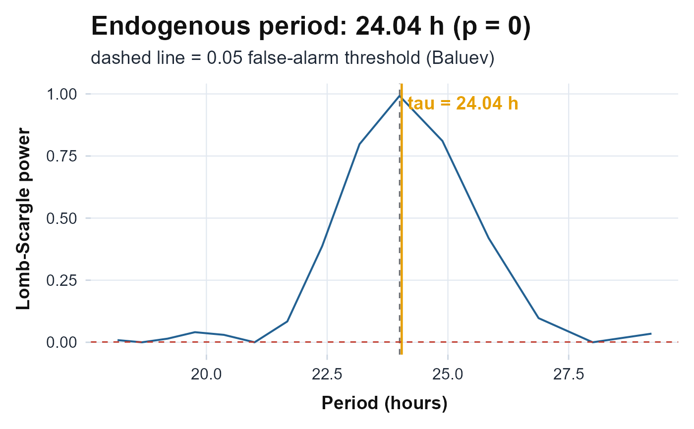

Plot the Lomb-Scargle Periodogram with the Endogenous Period
Source:R/circadian_plots.R
plot_periodogram.RdComputes the full Lomb-Scargle periodogram of an activity series over a
period search window and plots spectral power against period (in hours). The
dominant endogenous period (tau) estimated by
circadian.period is marked with a labelled vertical line, and a
dashed reference line is drawn at 24 hours so the deviation of the biological
clock from exactly one solar day is visible.
Arguments
- counts
Numeric vector of activity counts (minute-level recommended).
NAvalues (e.g. non-wear epochs) are dropped together with their timestamps before estimation.- timestamps
A
POSIXctvector (or anything coercible byas.numeric) of epoch timestamps, the same length ascounts.- from
Numeric. Lower bound of the period search window, in hours (default
18).- to
Numeric. Upper bound of the period search window, in hours (default
30).- ofac
Integer oversampling factor passed to
lomb::lsp. Higher values give a finer period grid (default4).
Value
A ggplot object: Lomb-Scargle power (y) versus period in hours
(x), with the peak period and the 24 h reference annotated. On insufficient
data (all-NA, constant, or fewer than about 2 days of span) a
ggplot carrying a centred "Insufficient data for periodogram"
annotation is returned instead; the function never errors.
Details
The full spectrum is obtained from
lomb::lsp(x, times, from, to, type = "period", ofac, plot = FALSE),
whose $scanned component holds the trial periods (hours) and
$power the corresponding normalized Lomb-Scargle power. The peak period
tau and its p_value come from circadian.period so
that the highlighted peak is exactly the value reported by the analytic
function. The Lomb-Scargle periodogram is the least-squares spectral estimator
for unevenly sampled series and is therefore appropriate for gappy actigraphy
data, which an FFT cannot accommodate.
References
Lomb NR (1976). “Least-squares frequency analysis of unequally spaced data.” Astrophysics and Space Science, 39(2), 447–462. doi:10.1007/BF00648343 .
Scargle JD (1982). “Studies in astronomical time series analysis. II. Statistical aspects of spectral analysis of unevenly spaced data.” The Astrophysical Journal, 263, 835–853. doi:10.1086/160554 .
Ruf T (1999). “The Lomb-Scargle periodogram in biological rhythm research: analysis of incomplete and unequally spaced time-series.” Biological Rhythm Research, 30(2), 178–201. doi:10.1076/brhm.30.2.178.1422 .
Examples
# \donttest{
t_hours <- seq(0, 7 * 24 - 1 / 60, by = 1 / 60)
ts <- as.POSIXct("2024-01-01 00:00:00") + t_hours * 3600
counts <- 100 + 80 * cos(2 * pi * (t_hours - 8) / 24) +
rnorm(length(t_hours), 0, 5)
plot_periodogram(counts, ts)

# }